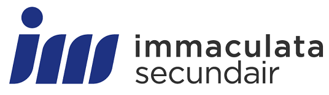

Observatieweek bij Ecover
Leerlinge van het Immaculata Secundair
Mezelf
Mijn naam is Nalani, ik ben een laatstejaars leerlinge aan het Immaculata
Secundair te Oostalle.
Voor mijn geïntegreerde proef moest ik een week
op observatie in een bedrijf dat aansluit bij mijn richtig,
Ondernemen &
IT. Als stagebedrijf heb ik gekozen voor Ecover, Ecover is een groeiend
bedrijf in Oostmalle. Op deze website
ga ik jullie laten zien hoe ik deze
week heb ervaren.

Ecover
Ecover produceert 100% biologische, hygiënische producten: was- en vaatwasmiddel, persoonlijke verzorging alsook huishoudelijke producten. Ecover heeft zustervestigingen in zowel Amerika, Verenigd Koninkrijk, Duitsland, Zwitserland als in Frankrijk. Al snel werd het bedrijf in de media beschreven als: “eerste ecologische fabriek”. Sindsdien is het groene imago alleen maar versterkt. Ze streven enorm naar ecologisch werk: recycleerbare flessen, zo weinig mogelijk verpakking en nog veel meer.Vereingde Staten, het Verenigd Koninkrijk, Duitsland, en nog een tal van andere landen.
De 3 P's
| People |
Planet |
Profit |
| Als werknemer kom je hier zeker niets te kort. Naast verschillende teambuildings voorziet het bedrijf ook extraatjes. Dit kan gaan van een friet- tot pizzakraam dat langskomt. Meer gekend is "vettige vrijdag", op deze dag moet niemand zelf eten meenemen en worden er bv. hotdogs, pizza's, .... gemaakt. |
Onafgebroken vooruitgang, hier streven ze naar. Ze proberen alles steeds ecologischer te maken. Denk maar aan gerecycleerde flessen of verpakkingen. Ook worden er zo weinig mogelijk plastic flessen gebruikt, en op papier zijn er ook heel zuinig. |
Bij waspoeder is het allemaal begonnen. Vandaag de dag is alles ecologisch verantwoord. Met de winst kunnen we investeren in verschillende onderzoeken. Hierdoor ontwikkelen we nieuwe methodes. Nog cleaner nog ecologischer. |
Interessant weetje ...
Van bier tot afwasmiddel
Verspilling is bij ons iets wat absoluut niet aanvaard wordt, daarom stellen we jullie graag voor aan "Too good to waste". Heel wat producten worden weggegooid terwijl zij nog nuttig kunnen zijn in andere sectoren. Hier maken wij graag gebruik van, zo verwikkelen wij afvalresten van bierbrouw processen graag in onze producten. Tot maar liefst 25% van het gehele proces.
Hun missie
De missie van Ecover benadrukt grenzen verleggen: steeds ecologisch- en economischer te werk gaan. Daarnaast streven ze naar onafgebroken vooruitgang. Hier werken ze non-stop aan: van 100% recycleerbare flessen tot het hergebruiken tot 25% van afvalingrediënten die achterblijven in het bierbrouwproces van onder anderen AB Inbev.